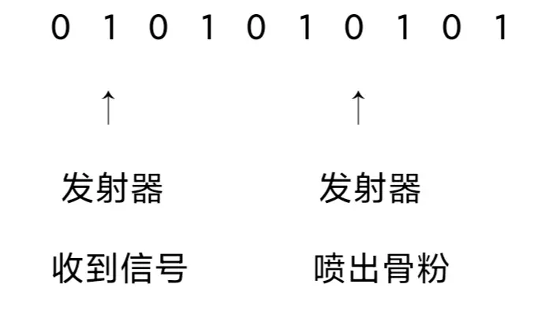
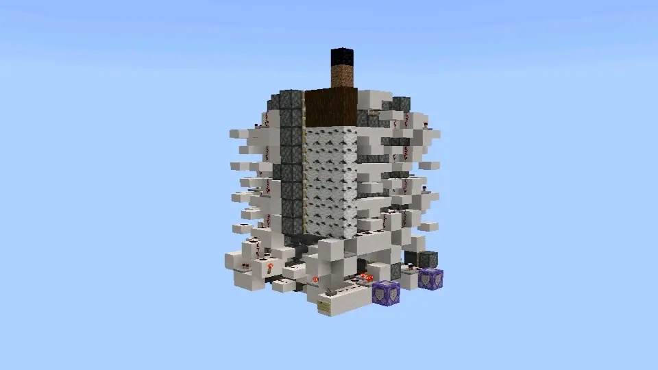
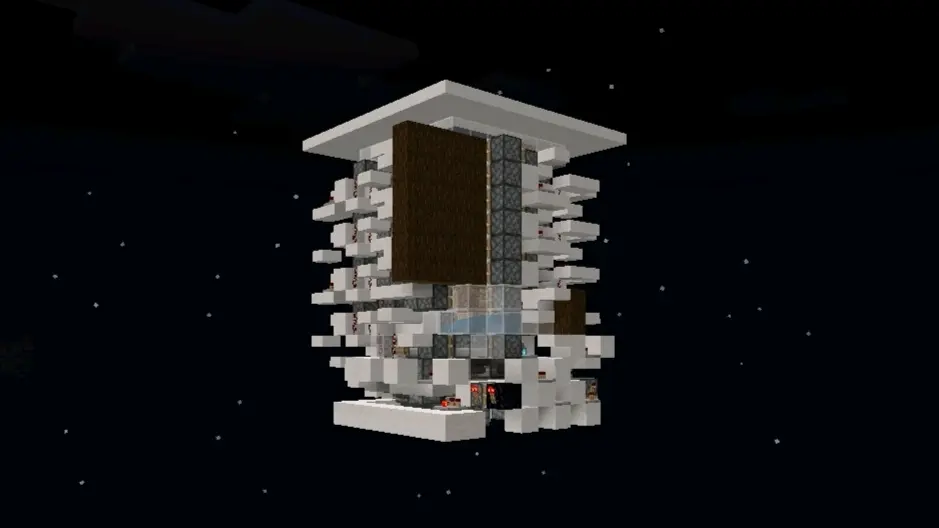
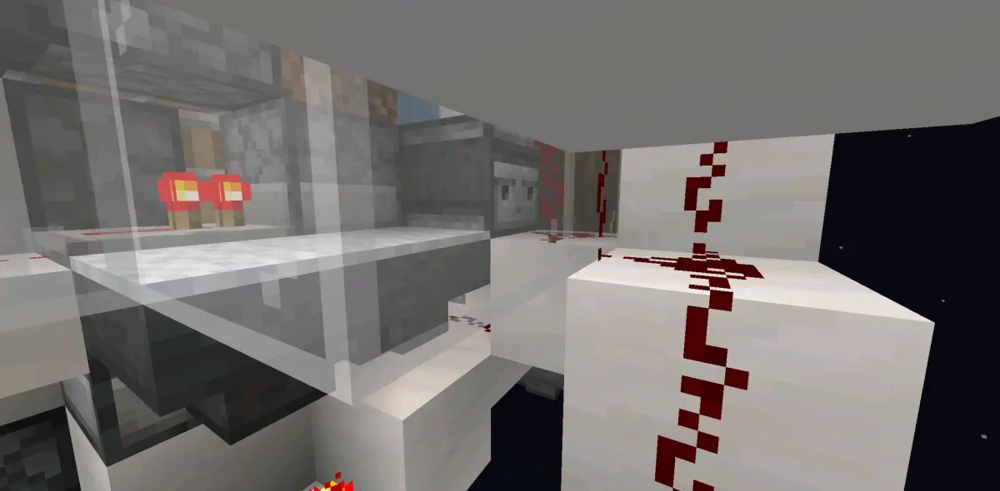
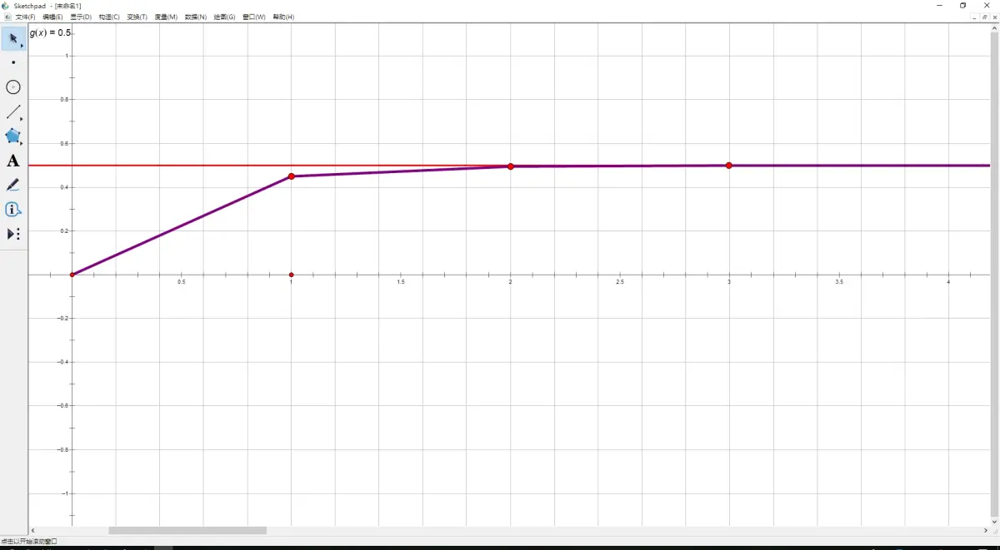
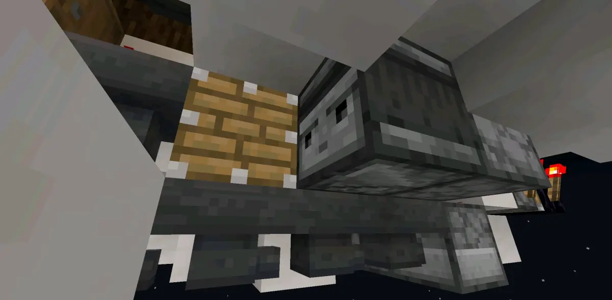
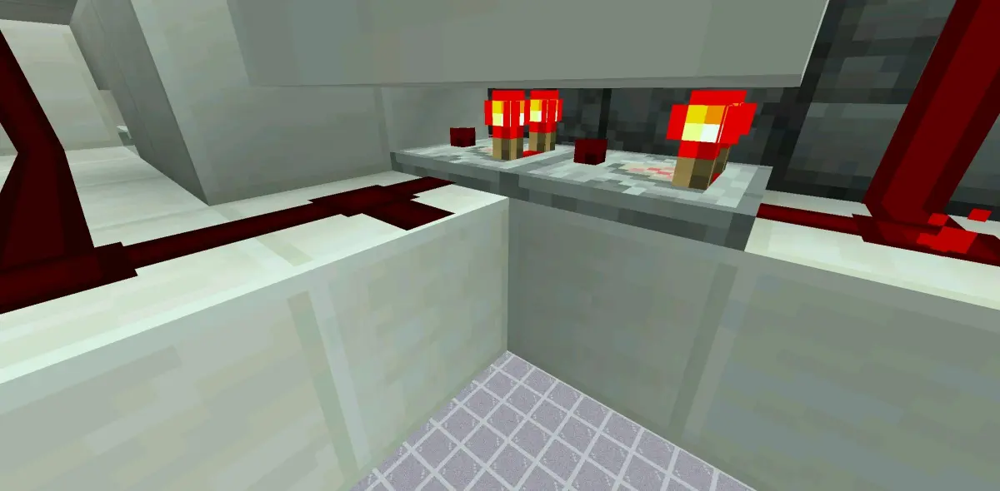
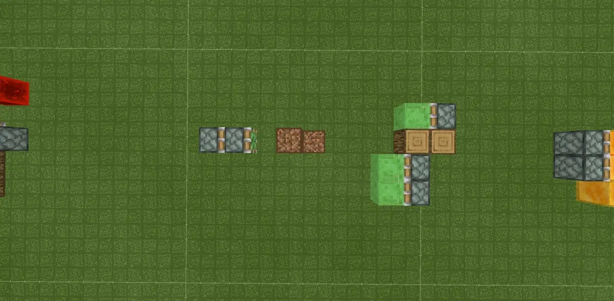
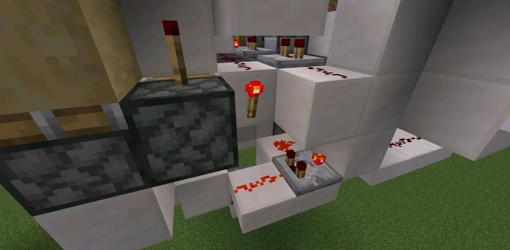

写在前面
感谢be玩树场的一众dalao，没有他们，be的树场科技树也不会像现在一样高度发达。
这篇专栏事实上是为了补齐之前一位退坑的树场dalao删除的一篇专栏。
准备知识
本专栏所及与发射器，投掷器密不可分，所以各位观前需要了解发射器与投掷器的基本知识。
发射器/投掷器如何工作？
发射器会在收到红石信号后4gt的下1gt喷出骨粉。如下图。
（令1为红石刻，0为普通刻）

发射器工作方式
这意味着:
①发射器并非一接收信号就会喷骨粉催熟。发射器工作存在4gt延迟。
②发射器的工作周期为4gt。
投掷器工作方式与发射器完全类似。
预催熟
树苗生长成一棵树有“第一阶段→第二阶段→长成一棵树”的过程，从第一阶段→第二阶段的过程中不需要进行生长检测。所以在树场运作期间，使用骨粉催熟，让树苗提前进入第二阶段，可以使催熟率更高。在树场运作期间预先对树苗进行骨粉催熟，就是“预催熟”。预催熟使树苗进入第二阶段，那么我们就认为“预催熟成功”。预催熟可以大幅度提升对树苗的催熟率，进而提高树场效率。
*预催熟能够带来的提升？
一般来说，预催熟带来的树场效率提升大约为15%。这里拿两个树场来做对比。

[MCBE]21034logs/h最快单核树场
作者:origin_0110（账号已注销）

MCBE 单线程55检测式树场世界纪录 24193.55logs/h
作者:愚蠢的德州马钰
这两个世界纪录树场所用的架构都是16gt土轮，架构处理速度是一致的。但这两个树场的底座设计不同。前者使用的是下吸底座，后者使用的是发射器轮底座。下吸底座速度慢，在树场运行期间是没有时刻能为树苗预留预催熟骨粉的，而发射器轮在第8gt之后就可以预留一个预催熟骨粉。就是这一个预催熟骨粉让这个架构的木头产出提高了3000+/h，对比提高了14.3%的效率。

世界纪录树场的预催熟线路
*大量的预催熟是否有意义？
答案是否。骨粉催熟有45%的几率使树苗进入下一阶段，当然，“第二阶段→长成一棵树”需要进行生长检测。如果生长检测不通过，树苗反而会倒退回第一阶段。大量的预催熟虽不会使催熟率不增反降，但是提升非常少。1个骨粉预催熟成功的几率是45%，3个骨粉预催熟成功的几率是49.95%。增加骨粉预催熟，预催熟成功的几率会无限趋近于50%。所以树场留予1~3个预催熟骨粉是最优方案。
linlin（origin_0110）建立了预催熟的函数模型
f(x)=(0.45x+0.55)^n，n∈N
P(n) = (f(1)-f(-1))/2 = (1-0.1^n)/2
其中n为预催熟骨粉数，P(n)为预催熟成功概率

linlin（origin_0110）建立的函数模型图像
模型具体推导过程可参考原专栏
注意，安排预催熟骨粉要注意发射器延迟！
骨粉补充
在需要移动发射器的底座中，如果发射器未复位时激活投掷器补充骨粉，投掷器会以掉落物形式将骨粉喷出。这就是树场常见的“漏骨粉”问题。所以，使用这类底座设计树场时，我们需要考虑骨粉补充的时序，避免产生漏骨粉的问题。
下面介绍两例骨粉补充思路
第一种方案，单独设计一条与树场总线相接的骨粉补充线路，在树场检测到长树后激活投掷器补充骨粉。如下图。

周期补充骨粉
第二种方案，利用树场总线短暂抑制骨粉高频，避免在发射器移位时激活投掷器漏出骨粉。如下图。

抑制骨粉高频
尤其注意要考虑投掷器的延迟！
发射器轮虽快，不要漏骨粉哦！
骨粉矫正
由准备知识可知，发射器的工作周期为4gt。也就是说发射器会在每4gt发射1次骨粉。
然而不同架构的树场拥有不同的架构速度。而有时候，一些特殊的架构遇上这样的工作周期会很尴尬。如果这个架构速度不是4的整数倍gt，在处理完之后不能第一时间催熟树苗，导致树场不能达到架构速度。还有诸多环境我们不希望发射器工作。所以，对发射器/投掷器作一定的矫正操作，使发射器在最合适的时刻喷出骨粉催熟树苗，这样的操作就是骨粉矫正。
例如下面这个架构:

18gt架构
架构速度:2gt检测+14gt二归+2gt墙存 共18gt
然而，发射器的工作周期是4gt，这意味着该树场绝不能在18gt吃到催熟骨粉，不能达到真实的18gt架构速度。更糟的是，2gt墙存是发生在树场5*5检测范围之外的，也就是说发射器在16gt就可以使树苗被催熟，但此时墙存还没结束，再次检测启动树场会导致树场原地爆炸。所以，我们需要对其进行骨粉矫正。
这里介绍一种简易且实用的骨粉矫正。
用总线接红石火把接比较器高频。
只需要让树场总线控制骨粉高频的信号源（红石火把），就能制作一个简易的14gt骨粉矫正。
下面是简单的计算。
2gt（红石比较器检测延迟）+4gt（树场总线脉冲时长）+2gt（红石火把延迟）+2gt（红石比较器高频延迟）+4gt（发射器延迟）=14gt
这样我们就制作了一个14gt的骨粉矫正，根据4gt周期顺延，发射器会在第18gt再次催熟树苗，达成骨粉矫正的目的，达到架构速度。这个骨粉矫正用在18gt树场上，连预催熟也顺带搞定了。

拙作18gt树场的骨粉矫正线路
骨粉矫正的思路有很多。各位可以根据理解自行探索其他骨粉矫正方式。
骨粉矫正有时候也用于一些特定的场景。例如，为省骨粉可以运用骨粉矫正减少不必要的骨粉预催。或者，可以利用骨粉矫正的抑制高频思路来制作特殊底座的骨粉补充。
那么本篇专栏到此也就结笔了。感谢各位看到最后！
引用
[MCBE][水]部分树苗的生长机制
相关树场
[MCBE]21034logs/h最快单核树场
MCBE 单线程55检测式树场世界纪录 24193.55logs/h
MCBE 四发射器 土轮树场
再次感谢MCBE一众坚持玩树场的dalao们，如果没有你们，BE的树场理论还无法像今天一样完备！
笔:南下北伐诸侯